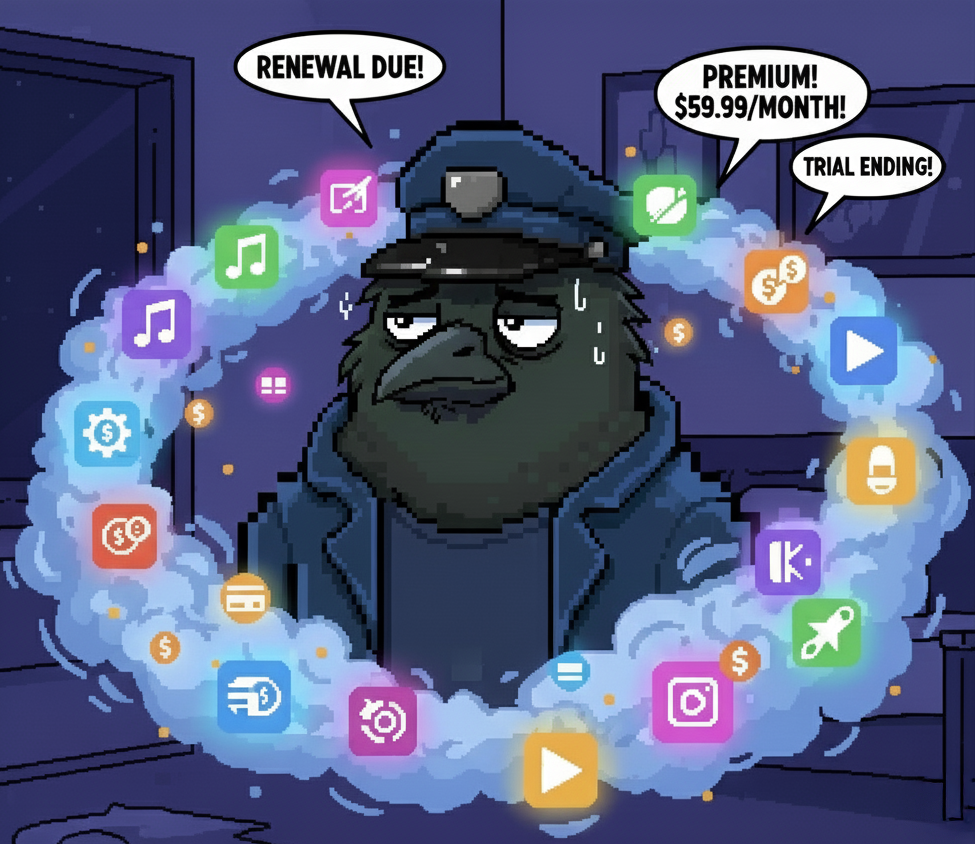

Chapter 1: The Great Subscription Catastrophe!
Once upon a time in the digital realm, a brilliant corvid downloaded "just one more productivity app." Before they knew it, they were drowning in a sea of $2.99 here, $9.99 there, and $19.99 monthly everywhere! Our feathered protagonist would sit on their perch each morning, watching their bank account shrink.
"CAW! Why do I need seventeen different subscriptions just to be productive?!"
The poor corvid was experiencing what scientists call Subscriptus Exhausticus – a modern condition where one's wallet becomes lighter while their phone becomes heavier with unused premium apps.